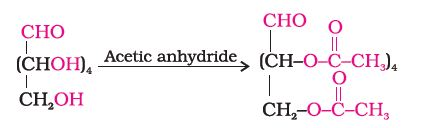

Carbohydrates are primarily produced by plants and form a very large group of naturally occurring organic compounds. Some common examples are cane sugar, glucose, starch, etc. Most of them have a general formula, Cx(H2O)y, and were considered as hydrates of carbon from where the name carbohydrate was derived. For example, the molecular formula of glucose (C6H12O6) fits into this general formula, C6(H2O)6. But all the compounds which fit into this formula may not be classified as carbohydrates. Acetic acid (CH3COOH) fits into this general formula, C2(H2O)2 but is not a carbohydrate. Similarly, rhamnose, C6H12O5 is a carbohydrate but does not fit in this definition. A large number of their reactions have shown that they contain specific functional groups. Chemically, the carbohydrates may be defined as optically active polyhydroxy aldehydes or ketones or the compounds which produce such units on hydrolysis. Some of the carbohydrates, which are sweet in taste, are also called sugars. The most common sugar, used in our homes is named as sucrose whereas the sugar present in milk is known as lactose. Carbohydrates are also called saccharides (Greek: sakcharon means sugar).
Carbohydrates are classified on the basis of their behaviour on hydrolysis. They have been broadly divided into following three groups.
(i) Monosaccharides: A carbohydrate that cannot be hydrolysed further to give simpler unit of polyhydroxy aldehyde or ketone is called a monosaccharide. About 20 monosaccharides are known to occur in nature. Some common examples are glucose, fructose, ribose, etc.
(ii) Oligosaccharides: Carbohydrates that yield two to ten monosaccharide units, on hydrolysis, are called oligosaccharides. They are further classified as disaccharides, trisaccharides, tetrasaccharides, etc., depending upon the number of monosaccharides, they provide on hydrolysis. Amongst these the most common are disaccharides. The two monosaccharide units obtained on hydrolysis of a disaccharide may be same or different. For example, sucrose on hydrolysis gives one molecule each of glucose and fructose whereas maltose gives two molecules of glucose only.
(iii) Polysaccharides: Carbohydrates which yield a large number of monosaccharide units on hydrolysis are called polysaccharides. Some common examples are starch, cellulose, glycogen, gums, etc. Polysaccharides are not sweet in taste, hence they are also called non-sugars.
The carbohydrates may also be classified as either reducing or nonreducing sugars. All those carbohydrates which reduce Fehling's solution and Tollens' reagent are referred to as reducing sugars. All monosaccharides whether aldose or ketose are reducing sugars.
In disaccharides, if the reducing groups of monosaccharides i.e., aldehydic or ketonic groups are bonded, these are non-reducing sugars e.g. sucrose. On the other hand, sugars in which these functional groups are free, are called reducing sugars, for example, maltose and lactose.
Monosaccharides are further classified on the basis of number of carbon atoms and the functional group present in them. If a monosaccharide contains an aldehyde group, it is known as an aldose and if it contains a keto group, it is known as a ketose. Number of carbon atoms constituting the monosaccharide is also introduced in the name as is evident from the examples given in Table 14.1
Table 14.1: Different Types of Monosaccharides
| Carbon atoms | General term | Aldehyde | Ketone |
| 3 | Triose | Aldotriose | Ketotriose |
| 4 | Tetrose | Aldotetrose | Ketotetrose |
| 5 | Pentose | Aldopentose | Ketopentose |
| 6 | Hexose | Aldohexose | Ketohexose |
| 7 | Heptose | Aldoheptose | Ketoheptose |
I Glucose
Glucose occurs freely in nature as well as in the combined form. It is present in sweet fruits and honey. Ripe grapes also contain glucose in large amounts. It is prepared as follows:
1. From sucrose (Cane sugar): If sucrose is boiled with dilute HCl or H2SO4 in alcoholic solution, glucose and fructose are obtained in equal amounts.
2. From starch: Commercially glucose is obtained by hydrolysis of starch by boiling it with dilute H2SO4 at 393 K under pressure.
Glucose is an aldohexose and is also known as dextrose. It is the monomer of many of the larger carbohydrates, namely starch, cellulose. It is probably the most abundant organic compound on earth. It was assigned the structure given below on the basis of the following evidences:
1. Its molecular formula was found to be C6H12O6.
2. On prolonged heating with HI, it forms n-hexane, suggesting that all the six carbon atoms are linked in a straight chain.
3. Glucose reacts with hydroxylamine to form an oxime and adds a molecule of hydrogen cyanide to give cyanohydrin. These reactions confirm the presence of a carbonyl group (>C = O) in glucose.
4. Glucose gets oxidised to six carbon carboxylic acid (gluconic acid) on reaction with a mild oxidising agent like bromine water. This indicates that the carbonyl group is present as an aldehydic group.
5. Acetylation of glucose with acetic anhydride gives glucose pentaacetate which confirms the presence of five –OH groups. Since it exists as a stable compound, five –OH groups should be attached to different carbon atoms.

6. On oxidation with nitric acid, glucose as well as gluconic acid both yield a dicarboxylic acid, saccharic acid. This indicates the presence of a primary alcoholic (–OH) group in glucose.
The exact spatial arrangement of different —OH groups was given by Fischer after studying many other properties. Its configuration is correctly represented as I. So gluconic acid is represented as II and saccharic acid as III.
Glucose is correctly named as D(+)-glucose. 'D' before the name of glucose represents the configuration whereas '(+)' represents dextrorotatory nature of the molecule. It may be remembered that 'D' and 'L' have no relation with the optical activity of the compound. The meaning of D– and L– notations is given as follows.
The letters 'D' or 'L' before the name of any compound indicate the relative configuration of a particular stereoisomer. This refers to their relation with a particular isomer of glyceraldehyde. Glyceraldehyde contains one asymmetric carbon atom and exists in two enantiomeric forms as shown below.All those compounds which can be chemically correlated to (+) isomer of glyceraldehyde are said to have D-configuration whereas those which can be correlated to (–) isomer of glyceraldehyde are said to have L—configuration. For assigning the configuration of monosaccharides, it is the lowest asymmetric carbon atom (as shown below) which is compared. As in (+) glucose, —OH on the lowest asymmetric carbon is on the right side which is comparable to (+) glyceraldehyde, so it is assigned D-configuration. For this comparison, the structure is written in a way that most oxidised carbon is at the top.
The structure (I) of glucose explained most of its properties but the following reactions and facts could not be explained by this structure.
1. Despite having the aldehyde group, glucose does not give Schiff's test and it does not form the hydrogensulphite addition product with NaHSO3. 2. The pentaacetate of glucose does not react with hydroxylamine indicating the absence of free —CHO group. 3. Glucose is found to exist in two different crystalline forms which are named as α and β. The α -form of glucose (m.p. 419 K) is obtained by crystallisation from concentrated solution of glucose at 303 K while the β-form (m.p. 423 K) is obtained by crystallisation from hot and saturated aqueous solution at 371 K. This behaviour could not be explained by the open chain structure (I) for glucose. It was proposed that one of the —OH groups may add to the —CHO group and form a cyclic hemiacetal structure. It was found that glucose forms a six-membered ring in which —OH at C-5 is involved in ring formation. This explains the absence of —CHO group and also existence of glucose in two forms as shown below. These two cyclic forms exist in equilibrium with open chain structure.The two cyclic hemiacetal forms of glucose differ only in the configuration of the hydroxyl group at C1, called anomeric carbon (the aldehyde carbon before cyclisation). Such isomers, i.e., α-form and β-form, are called anomers. The six membered cyclic structure of glucose is called pyranose structure (α – or β–), in analogy with pyran. Pyran is a cyclic organic compound with one oxygen atom and five carbon atoms in the ring. The cyclic structure of glucose is more correctly represented by Haworth structure as given below.
II. Fructose
Fructose is an important ketohexose. It is obtained along with glucose by the hydrolysis of disaccharide, sucrose.Fructose also has the molecular formula C6H12O6 and on the basis of its reactions it was found to contain a ketonic functional group at carbon number 2 and six carbons in straight chain as in the case of glucose. It belongs to D-series and is a laevorotatory compound. It is appropriately written as D-(–)-fructose. Its open chain structure is as shown.
It also exists in two cyclic forms which are obtained by the addition of The ring, thus formed is a five membered ring and is named as furanose with analogy to the compound furan. Furan is a five membered cyclic compound with one oxygen and four carbon atoms.
The cyclic structures of two anomers of fructose are represented by Haworth structures as given.
You have already read that disaccharides on hydrolysis with dilute acids or enzymes yield two molecules of either the same or different monosaccharides. The two monosaccharides are joined together by an oxide linkage formed by the loss of a water molecule. Such a linkage between two monosaccharide units through oxygen atom is called glycosidic linkage.
(i) Sucrose: One of the common disaccharides is sucrose which on hydrolysis gives equimolar mixture of D-(+)-glucose and D-(-) fructose.These two monosaccharides are held together by a glycosidic linkage between C1 of α -glucose and C2 of β-fructose. Since the reducing groups of glucose and fructose are involved in glycosidic bond formation, sucrose is a non reducing sugar.
Sucrose is dextrorotatory but after hydrolysis gives dextrorotatory glucose and laevorotatory fructose. Since the laevorotation of fructose (–92.4°) is more than dextrorotation of glucose (+ 52.5°), the mixture is laevorotatory. Thus, hydrolysis of sucrose brings about a change in the sign of rotation, from dextro (+) to laevo (–) and the product is named as invert sugar.
(ii) Maltose: Another disaccharide, maltose is composed of two α-D-glucose units in which C1 of one glucose (I) is linked to C4 of another glucose unit (II). The free aldehyde group can be produced at C1 of second glucose in solution and it shows reducing properties so it is a reducing sugar.(iii) Lactose: It is more commonly known as milk sugar since this disaccharide is found in milk. It is composed of β-D-galactose and β-D-glucose. The linkage is between C1 of galactose and C4 of glucose. Hence it is also a reducing sugar.
Polysaccharides contain a large number of monosaccharide units joined together by glycosidic linkages. These are the most commonly encountered carbohydrates in nature. They mainly act as the food storage or structural materials.
(ii) Cellulose: Cellulose occurs exclusively in plants and it is the most abundant organic substance in plant kingdom. It is a predominant constituent of cell wall of plant cells. Cellulose is a straight chain
polysaccharide composed only of β-D-glucose units which are joined by glycosidic linkage between C1 of one glucose unit and C4 of the next glucose unit.
(iii) Glycogen: The carbohydrates are stored in animal body as glycogen. It is also known as animal starch because its structure is similar to amylopectin and is rather more highly branched. It is present in liver, muscles and brain. When the body needs glucose, enzymes break the glycogen down to glucose. Glycogen is also found in yeast and fungi.Carbohydrates are essential for life in both plants and animals. They form a major portion of our food. Honey has been used for a long time as an instant source of energy by 'Vaids' in ayurvedic system of medicine. Carbohydrates are used as storage molecules as starch in plants and glycogen in animals. Cell wall of bacteria and plants is made up of cellulose. We build furniture, etc. from cellulose in the form of wood and clothe ourselves with cellulose in the form of cotton fibre. They provide raw materials for many important industries like textiles, paper, lacquers and breweries.
Two aldopentoses viz. D-ribose and 2-deoxy-D-ribose (Section 14.5.1, Class XII) are present in nucleic acids. Carbohydrates are found in biosystem in combination with many proteins and lipids.